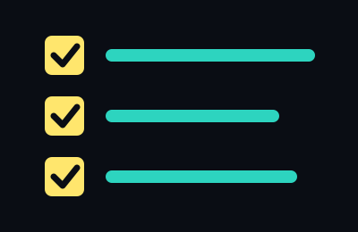

Temas
-

-

O que é acessibilidade
A acessibilidade está relacionada às condições que permitem às pessoas utilizar, com segurança e autonomia, espaços, serviços, informações, meios de comunicação e diferentes atividades da vida cotidiana. Para as pessoas com deficiência, a ausência dessas condições pode representar obstáculos ao exercício de direitos básicos, como estudar, trabalhar, utilizar o transporte, acessar serviços públicos, receber informações e participar da vida social. Esses obstáculos são chamados de barreiras e podem assumir diferentes formas.
A lei e a web
No Brasil, a Lei Brasileira de Inclusão da Pessoa com Deficiência (Lei 13.146/2015) define barreiras como qualquer entrave, obstáculo, atitude ou comportamento que limite ou impeça a participação social da pessoa, assim como o exercício de seus direitos à acessibilidade, à liberdade de movimento e de expressão, à comunicação, ao acesso à informação, à compreensão e à circulação com segurança. A mesma lei exige acessibilidade também em sites e aplicativos. Na prática, os sites devem seguir as diretrizes internacionais WCAG (Web Content Accessibility Guidelines, ou Diretrizes de Acessibilidade para Conteúdo Web), criadas pelo W3C (World Wide Web Consortium).